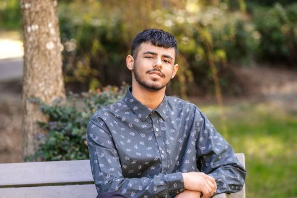

Brady Leggett
Brady.Leggett@student.greenriver.edu
https://www.linkedin.com/in/brady-leggett-107130293/
https://github.com/BradyLeg

Summary
I'm a current software Delevopment student at Green River college. I'm currently intsterested in any software position as I want to have software development job experience to see what field I enjoy the most.
Education
Green River College - Auburn, Wa
Bachelor of Applied Science, expected June 2026
Major: Software Development, GPA:
Relevant Coursework:
- Object-Oriented Programming
- Data Strucutres
- Advanced Technical Communications
- Systems Programming
- Web Development Fundamentals
- Full Stack Web Development
- Algorithms
Skills and Certifications
- Languages: Java, SQL, JavaScript
- Web: HTML/CSS, JSON
- Aglie Programming
- Tools: Git and GitHub
Experience
Capstone Class - Auburn, WA
- Created a website for the Green River Aviation department containing useful information and resources for students intsterested or in the aviation program
- First website that I was involved with that was publicly hosted
- Created a contacts page for the website. Learned how to hyperlink an email address, learned to make commits and push/pull requests using git and GitHub, and learned how to host a website.
Achievements and Actives
- Green River College Foundation Scholarship, Awardee, 2023
- Auburn Mountainview High School Robotics club, Co-captain, 2020-2023
- Running Start Student, 2021-2023